Attendance Risk Prediction Dashboard
Project Overview
This project is an HR analytics dashboard developed using Streamlit to analyze employee attendance patterns, late arrival behavior, and potential attendance risk. The dashboard helps HR teams monitor workforce discipline, identify high-risk employees, and support data-driven decision-making.
The system provides attendance forecasting, late analysis, employee risk ranking, calendar heatmaps, divisional trend analysis, and individual risk probability views through interactive filters and visualizations.
Objectives
- Analyze employee attendance and lateness patterns.
- Predict attendance risk for upcoming workdays.
- Identify employees and divisions with higher lateness risk.
- Support HR monitoring through interactive dashboards and filters.
- Provide actionable insights for workforce management and operational planning.
Tools & Technologies
Key Features
1. Dashboard Home
The home page introduces the HR analytics dashboard and provides navigation to key modules, including attendance forecast and late employee analysis.
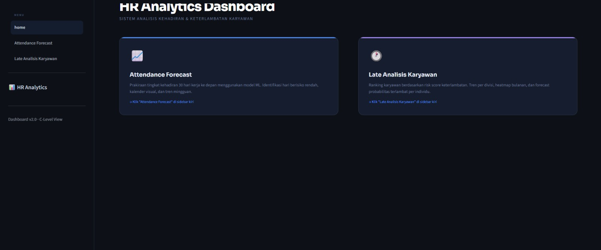
HR Analytics Dashboard Home
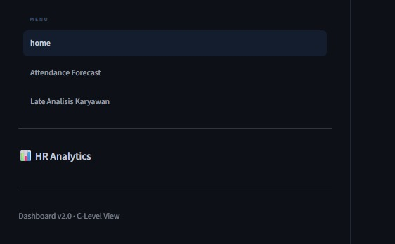
Dashboard Navigation Menu
2. Attendance Forecast Summary
This feature displays summary metrics such as predicted attendance average, maximum and minimum attendance rate, number of critical days, and trend direction. It helps HR quickly understand the overall attendance condition.
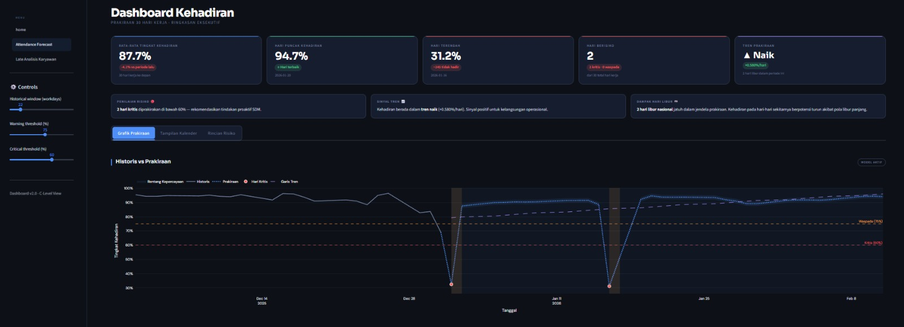
Attendance Forecast Summary Metrics
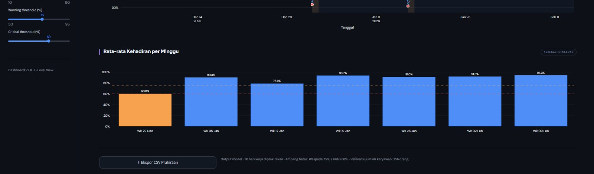
Historical vs Forecast Attendance Chart
3. Attendance Calendar Heatmap
The calendar heatmap visualizes predicted attendance levels for upcoming days. Color intensity helps identify risky dates, warning days, and normal attendance periods in a more intuitive way.
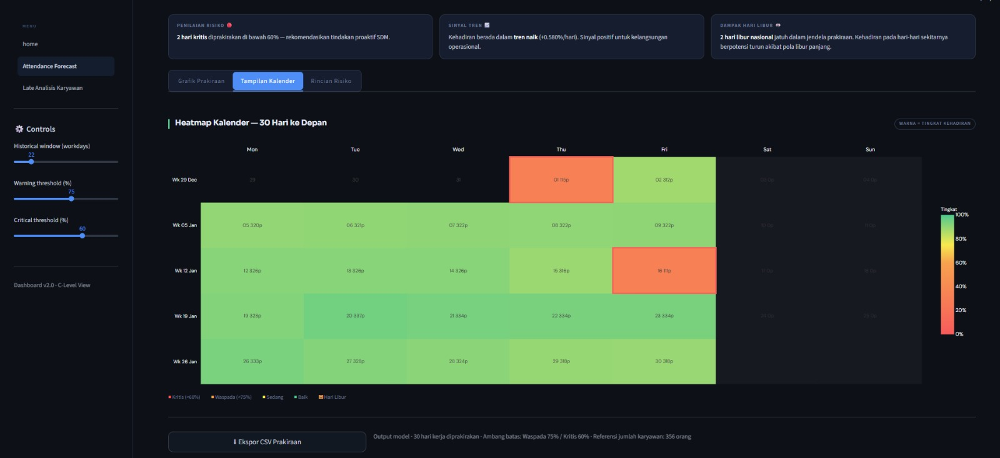
30-Day Attendance Calendar Heatmap
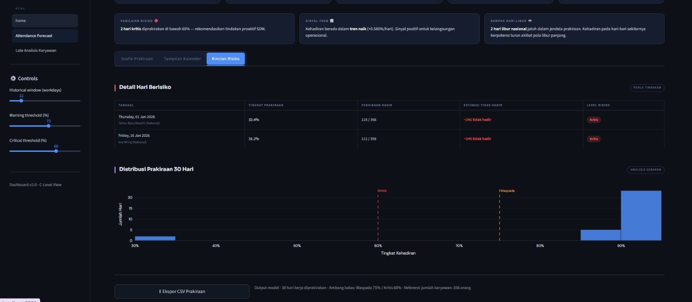
Risk Detail and Distribution
4. Late Employee Analysis
This module analyzes late arrival behavior by employee, division, and department. It provides summary indicators such as total employees, high-risk employees, average lateness rate, and overall lateness trend.
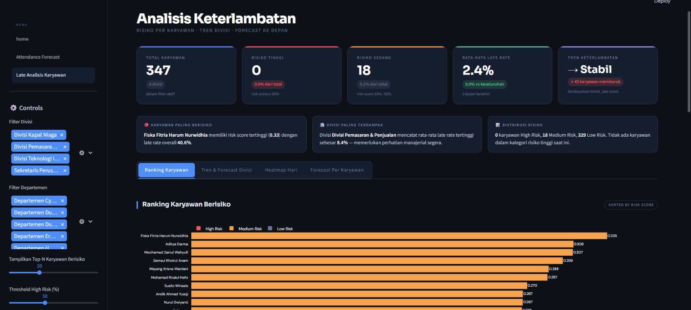
Late Analysis Dashboard Summary
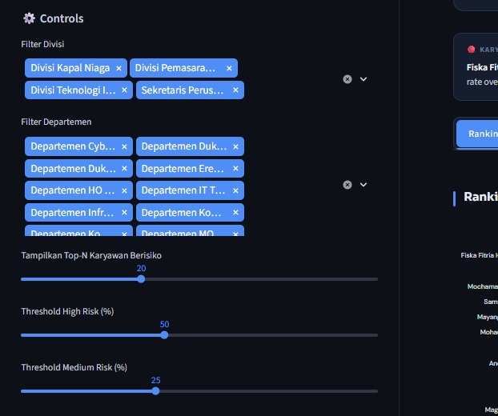
Interactive Filter Controls
5. Employee Risk Ranking
This feature ranks employees based on risk score to help HR identify individuals who may need attention or follow-up. The dashboard also includes a detailed table containing division, department, late rate, trend, and risk category.
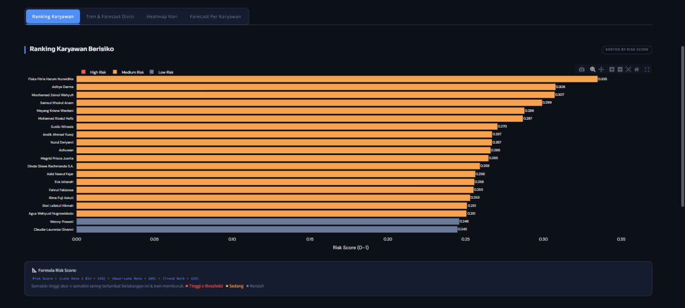
Employee Risk Ranking Chart
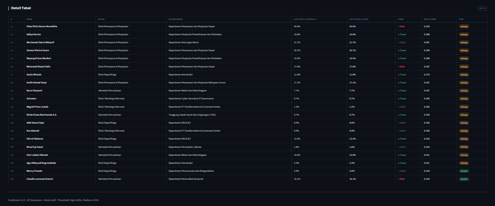
Employee Risk Detail Table
6. Division Trend & Forecast
This feature shows monthly lateness trends and forecasts by division. HR can compare divisions, evaluate model metrics, and identify departments with recurring lateness issues.
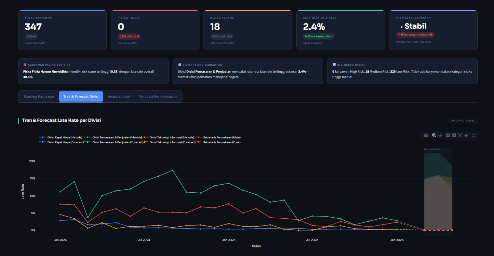
Trend and Forecast by Division
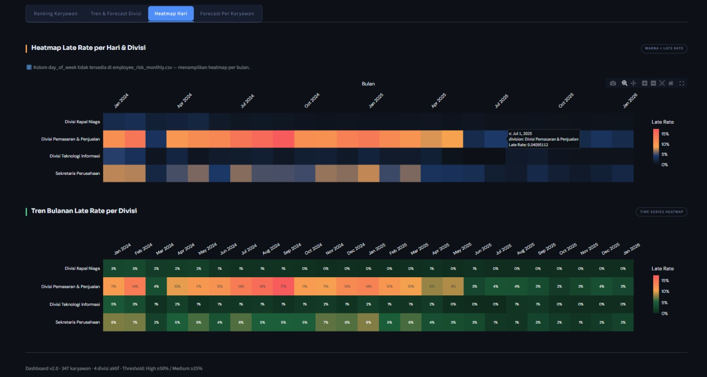
Monthly Division Heatmap
7. Employee Forecast Probability
The dashboard provides individual employee probability forecasts, including risk score, monthly late-rate history, EWMA trend, and projected risk zone. This supports more focused monitoring at the employee level.
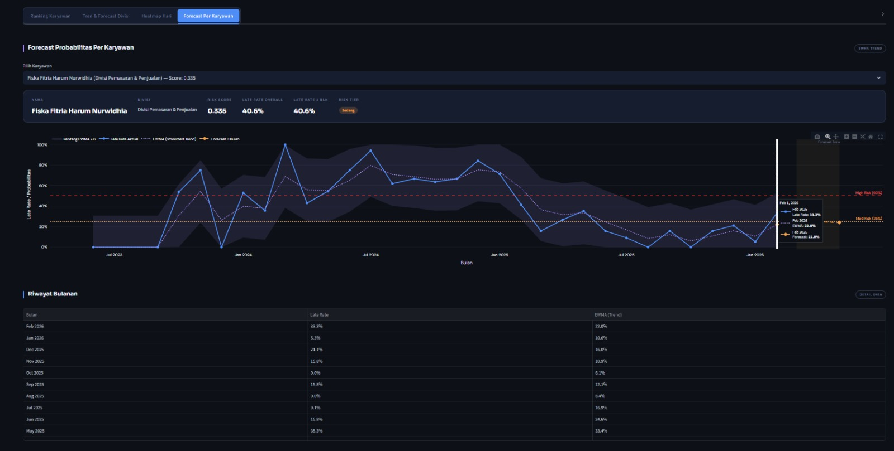
Employee Forecast Probability
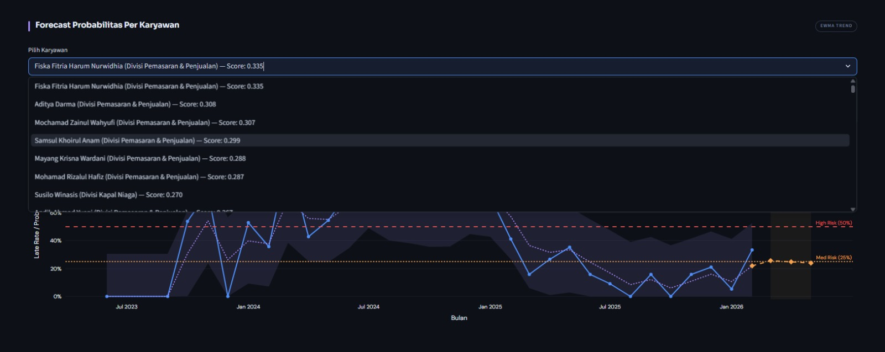
Employee Selection Dropdown
Results & Impact
- Built an interactive HR analytics dashboard for attendance and lateness monitoring.
- Enabled early identification of risky attendance patterns and critical dates.
- Provided employee-level and division-level insights for HR decision-making.
- Improved analysis readability through charts, heatmaps, rankings, and forecast views.
- Supported workforce planning by transforming attendance data into actionable insights.
GitHub Repository
Source code and project implementation are available on GitHub.
View Source Code on GitHub →